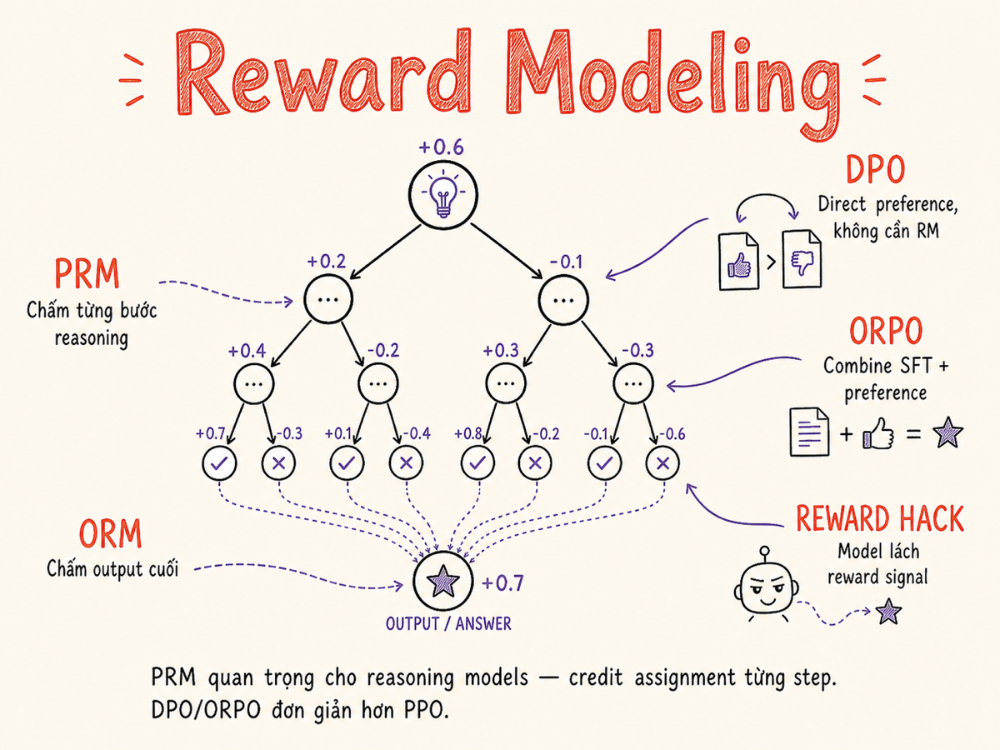

Reward Modeling & Process Supervision
Từ RLHF cổ điển với 4 model song song đến DPO một bước, từ scoring kết quả cuối đến giám sát từng bước suy luận — bức tranh toàn cảnh của preference-based alignment năm 2026.

36.1 Reward Model (RM) là gì?
Một Reward Model là một classifier (thường là LLM đã được fine-tune) nhận vào một cặp (prompt, response) và trả về một scalar score — điểm số phản ánh chất lượng hoặc mức độ phù hợp với preference của con người.
Ý tưởng cốt lõi: thay vì để human annotator đánh giá từng response trong pipeline training, ta distill judgment đó vào trong một model nhỏ có thể chạy real-time và cung cấp tín hiệu reward cho vòng lặp RL.
Reward Model ≈ "AI judge" được huấn luyện để dự đoán: "Human sẽ thích response này hay không?" và cho điểm từ 0 đến 1 (hoặc một real-valued score).
Cách huấn luyện RM từ preference pairs
Quá trình bắt đầu bằng dữ liệu pairwise preferences: với cùng một prompt, human annotator được yêu cầu chọn response nào tốt hơn giữa response A và B. Từ tập dữ liệu này, RM được fine-tune để predict preference đó.
# Cấu trúc training data cho Reward Model
{
"prompt": "Viết email xin lỗi khách hàng về chậm giao hàng",
"chosen": "Kính gửi Quý Khách, Chúng tôi xin chân thành xin lỗi vì...",
"rejected": "Sorry bạn ơi, hàng bị delay rồi, tại nhà cung cấp..."
}
# RM loss function (Bradley-Terry model)
# P(chosen > rejected) = sigmoid(r_chosen - r_rejected)
# Loss = -log P(chosen > rejected)
loss = -log_sigmoid(reward_model(prompt, chosen) - reward_model(prompt, rejected))36.2 Outcome Reward Model (ORM) vs Process Reward Model (PRM)
Đây là phân biệt quan trọng nhất trong reward modeling hiện đại, đặc biệt khi làm việc với reasoning models:
| Tiêu chí | ORM (Outcome) | PRM (Process) |
|---|---|---|
| Cái được score | Kết quả cuối cùng | Mỗi bước suy luận trung gian |
| Dữ liệu cần | Đơn giản hơn — chỉ cần label đúng/sai | Phức tạp hơn — label từng step |
| Credit assignment | Không rõ ràng — không biết bước nào đúng/sai | Chính xác — biết step nào gây lỗi |
| Phù hợp với | Task đơn giản, câu trả lời cuối rõ ràng | Reasoning dài, math, code, logic |
| Chi phí annotation | Thấp | Cao (phải label mỗi step) |
| Ví dụ dùng | Helpfulness, safety classifiers | OpenAI o1/o3, DeepSeek Math, PRM800K |
| Verifiable reward (RLVR) | Không cần score riêng — dùng verifier xác định đúng/sai (compiler, calculator) | DeepSeek-R1 (GRPO), OpenAI RFT — loại bỏ cả RM lẫn value model |
36.3 Tại sao PRM quan trọng cho Reasoning Models
Các model suy luận thế hệ mới — OpenAI o1/o3, DeepSeek-R1, Claude thinking mode, Gemini 2.0 Flash Thinking — đều hoạt động dựa trên một chuỗi suy luận dài (chain-of-thought) trước khi đưa ra câu trả lời cuối. Đây là lúc PRM trở nên không thể thiếu.
DeepSeek-R1 (tháng 1/2025) phổ biến hóa RLVR: thay vì dùng PRM/ORM
học từ human preferences, model nhận feedback trực tiếp từ
deterministic verifiers — compiler kiểm tra code đúng/sai, calculator kiểm tra
toán học, unit test kiểm tra logic. Pipeline dùng GRPO (Group Relative
Policy Optimization) thay PPO: loại bỏ cả reward model lẫn value model (critic),
chỉ cần 2 model trong VRAM thay vì 4.
Accuracy reward (đáp án đúng hay không) kết hợp với format reward (tuân thủ
<think>...</think>). RLVR hiện là nền tảng của hầu hết
reasoning models state-of-the-art.
Vấn đề của ORM với reasoning chains
Hãy tưởng tượng một bài toán math 10 bước. Model suy luận sai ở bước 3, nhưng vô tình sửa lại ở bước 8, ra đáp án đúng. ORM sẽ cho điểm cao — nhưng reasoning của model thực sự flawed. Ngược lại, model suy luận đúng đến bước 9 rồi arithmetic slip ở bước cuối — ORM phạt nặng mặc dù reasoning chain rất tốt.
Năm 2023, OpenAI công bố PRM800K — tập dữ liệu 800,000 step-level labels cho 75,000 bài toán MATH. Mỗi bước được human annotators đánh giá: positive (đúng hướng), negative (sai), hoặc neutral. Dataset này là nền tảng cho research PRM hiện đại và chứng minh PRM vượt ORM đáng kể trên math benchmarks.
Best-of-N với PRM: search time compute
Một ứng dụng thực tế mạnh của PRM là Best-of-N sampling: generate N reasoning chains khác nhau, dùng PRM để score từng chain, chọn chain tốt nhất. Đây là cách các reasoning models tăng accuracy mà không cần train lại model.
# Best-of-N với PRM (pseudocode)
def best_of_n_with_prm(prompt: str, n: int = 16) -> str:
candidates = [model.generate(prompt) for _ in range(n)]
# PRM score mỗi chain — product of step-level probabilities
scores = [prm.score_chain(prompt, chain) for chain in candidates]
best_idx = scores.index(max(scores))
return candidates[best_idx]
# Kết quả: accuracy tăng đáng kể mà không cần thêm training
# Trên MATH dataset: 45% → 68% (n=256) với Llama 3 base36.4 Định dạng Preference Data
Chất lượng preference data quyết định chất lượng của reward model — và do đó chất lượng của toàn bộ alignment pipeline. Có ba định dạng chính:
1. Pairwise (Chosen vs Rejected)
Định dạng phổ biến nhất. Với mỗi prompt, có đúng một cặp (chosen, rejected).
# Format chuẩn — dùng cho DPO, ORPO, SimPO
{
"prompt": "Làm thế nào để tăng tốc database query?",
"chosen": "Có nhiều cách để tối ưu: 1) Thêm index vào cột thường WHERE/JOIN,
2) Tránh SELECT *, chỉ lấy cột cần thiết, 3) Phân tích EXPLAIN ANALYZE...",
"rejected": "Bạn nên dùng cache hoặc upgrade server."
}2. Bradley-Terry Model
Mô hình xác suất nền tảng để so sánh pairwise. Nếu item i có strength s_i và item j có strength s_j, xác suất item i được chọn là:
Bradley-Terry Formula
P(i ≻ j) = σ(s_i − s_j) = 1 / (1 + exp(s_j − s_i))
Reward model được train để maximize log-likelihood của observed preferences theo model này.
Đây là lý do RM loss thường có dạng:
loss = −log σ(r_chosen − r_rejected)
3. Multi-attribute Preferences
Thay vì chỉ một label "tốt hơn", annotator đánh giá nhiều chiều: helpfulness, harmlessness, honesty, conciseness, accuracy. Cho phép reward model học trade-off giữa các attribute.
# Multi-attribute format
{
"prompt": "...",
"response_a": "...",
"response_b": "...",
"attributes": {
"helpfulness": "a_better",
"accuracy": "tie",
"conciseness": "b_better",
"harmlessness": "tie"
}
}36.5 RLHF Cổ Điển (PPO) — Cách Tiếp Cận 4-Model
Reinforcement Learning from Human Feedback theo kiến trúc InstructGPT (2022) là nền tảng của ChatGPT và các model aligned đầu tiên. Quy trình gồm 3 giai đoạn và đòi hỏi 4 model hoạt động đồng thời — đây là lý do tại sao nó phức tạp và tốn kém.
Ba giai đoạn RLHF
Supervised Fine-tuning (SFT)
Fine-tune pre-trained LLM trên tập dữ liệu (prompt, human-written response) chất lượng cao. Đây là bước khởi động — model học cách format và follow instructions cơ bản.
- Data: ~10,000–100,000 demonstration pairs từ contractors
- Output: SFT model — model có thể follow instructions nhưng chưa được aligned
- Đây là base model cho cả reward model lẫn policy model ở các bước sau
Train Reward Model
Dùng SFT model để generate nhiều responses cho cùng prompt, sau đó human xếp hạng các responses đó. Train RM để predict rankings này.
- Data: ~100,000–500,000 pairwise comparisons
- Architecture: SFT model + thêm scalar head thay vì vocab head
- Output: Reward Model — có thể score bất kỳ (prompt, response) pair
- Chi phí: annotation là bottleneck đắt nhất trong toàn pipeline
PPO Fine-tuning
Dùng Proximal Policy Optimization (RL algorithm) để fine-tune SFT model sao cho maximize reward từ RM.
- Policy model: LLM đang được train (initialized từ SFT)
- Reference model: bản copy frozen của SFT model — để tính KL penalty
- Reward model: cho điểm mỗi response
- Value model: estimate expected future reward (thường initialized từ RM)
- KL penalty:
reward = RM(r) − β·KL(π_policy || π_ref) - Vấn đề: memory-intensive, unstable training, nhiều hyperparameter nhạy cảm
PPO cần 4 model trong VRAM cùng lúc: policy, reference, reward, value. Với Llama 3 70B, đó là 4 × ~140GB ≈ 560GB VRAM ở FP16. Training không ổn định, dễ collapse. GRPO (DeepSeek 2024) đơn giản hóa: ước lượng advantage bằng Monte Carlo rollouts (nhóm mẫu cùng prompt) thay vì dùng value model — loại bỏ được critic và reward model khi dùng verifiable rewards (RLVR), còn lại chỉ 2 model. Phù hợp để chạy trên single high-end GPU với LoRA.
36.6 DPO — Direct Preference Optimization
Paper "Direct Preference Optimization: Your Language Model is Secretly a Reward Model" (Rafailov et al., 2023) là bước ngoặt quan trọng nhất trong alignment research. DPO chứng minh rằng bạn có thể loại bỏ hoàn toàn reward model riêng và vẫn đạt preference alignment tương đương hoặc tốt hơn PPO.
Ý tưởng toán học của DPO
DPO sử dụng thực tế rằng với KL-constrained RL objective, optimal policy có dạng đóng:
π*(y|x) ∝ π_ref(y|x) · exp(r(x,y)/β).
Từ đó, reward có thể được viết lại theo log-ratio của policy và reference model:
r(x,y) = β·log(π(y|x)/π_ref(y|x)) + Z(x)
DPO Loss Function
Trực giác: DPO tăng log-likelihood của chosen response và giảm log-likelihood của rejected response, nhưng có "regularization" bằng cách so sánh với reference model để không drift quá xa.
DPO data format vs SFT data format
# SFT data format — một response duy nhất
{
"messages": [
{"role": "user", "content": "Giải thích recursion"},
{"role": "assistant", "content": "Recursion là kỹ thuật..."}
]
}
# DPO data format — cần cặp (chosen, rejected)
{
"prompt": [{"role": "user", "content": "Giải thích recursion"}],
"chosen": [{"role": "assistant", "content": "Recursion là kỹ thuật lập trình
trong đó function gọi chính nó. Hãy nghĩ về hộp quà trong hộp quà..."}],
"rejected": [{"role": "assistant", "content": "Recursion là function tự gọi."}]
}
# Training với TRL DPOTrainer
from trl import DPOTrainer, DPOConfig
trainer = DPOTrainer(
model=model,
ref_model=ref_model, # frozen reference
args=DPOConfig(beta=0.1),
train_dataset=dpo_dataset,
)36.7 ORPO — Odds Ratio Preference Optimization
ORPO (Hong et al., 2024) đẩy đơn giản hóa thêm một bước: kết hợp SFT và preference optimization thành một giai đoạn duy nhất, đồng thời loại bỏ cả reference model.
Thay vì dùng log-ratio với reference model như DPO, ORPO dùng odds ratio — tỷ lệ xác suất model tạo ra response so với không tạo ra. Điều này loại bỏ nhu cầu về reference model vì odds ratio là self-contained trong model đang train.
ORPO Loss
L_ORPO = L_SFT − λ · log σ(log OR(y_w) − log OR(y_l))
Trong đó OR(y) = P(y|x) / (1 − P(y|x)) — odds model tạo ra response y.
L_SFT là cross-entropy loss thông thường trên chosen responses.
- Không cần reference model — tiết kiệm 50% VRAM so với DPO
- Một lần train — không cần SFT trước rồi DPO sau
- Penalty lên rejected responses mạnh hơn DPO
Dùng ORPO khi bạn train từ base model (chưa có SFT checkpoint) và muốn tiết kiệm compute. Dùng DPO khi bạn đã có SFT model tốt và chỉ muốn thêm preference alignment. ORPO đặc biệt tốt cho resource-constrained settings.
36.8 SimPO — Simple Preference Optimization
SimPO (Meng et al., 2024) đơn giản hóa DPO theo hướng khác: thay vì dùng reference model để tính implicit reward, SimPO dùng trực tiếp average log-likelihood per token làm reward signal.
SimPO Loss
r(x,y) = (1/|y|) · log π_θ(y|x)
L_SimPO = −log σ(β · (r(x,y_w) − r(x,y_l)) − γ)
- Không cần reference model — loại bỏ hoàn toàn
- Length normalization: chia cho độ dài tránh bias về response dài
- Margin γ: buộc score gap tối thiểu giữa chosen và rejected
- Training nhanh hơn, ổn định hơn DPO standard
SimPO outperform DPO trên nhiều benchmarks (AlpacaEval 2, MT-Bench, Arena-Hard) với cùng data nhưng ít compute hơn vì không cần forward pass qua reference model.
36.9 KTO — Kahneman-Tversky Optimization
KTO (Ethayarajh et al., 2024) giải quyết một vấn đề thực tế quan trọng: không phải lúc nào cũng có preference pairs đầy đủ. Nhiều khi bạn chỉ có single-sided feedback — "response này tốt" hoặc "response này xấu" — mà không có cặp so sánh trực tiếp.
Lấy cảm hứng từ lý thuyết kinh tế hành vi của Kahneman và Tversky (prospect theory), KTO nhận ra rằng loss aversion (tránh xấu) quan trọng hơn gain seeking (tìm tốt). Model được train để:
- Maximize log-likelihood của responses được label là good
- Minimize log-likelihood của responses được label là bad
- Với asymmetric weighting — phạt bad responses mạnh hơn reward good responses
Thu thập single-sided feedback dễ hơn pairwise: annotator chỉ cần nói "response này không tốt" mà không cần so sánh với response khác. Phù hợp khi bạn có logs từ production với thumbs-up/thumbs-down nhưng không có paired alternatives.
36.10 RLAIF và Constitutional AI
RLAIF (RL from AI Feedback) thay thế human annotators bằng một AI judge để tạo preference labels. Điều này giải quyết bottleneck lớn nhất của RLHF: tốc độ và chi phí của human annotation.
Constitutional AI (Anthropic)
Constitutional AI là hiện thực hóa đầy đủ nhất của RLAIF, được Anthropic công bố năm 2022 và là nền tảng của Claude. Pipeline gồm hai giai đoạn:
CAI Stage 1: SL-CAI (Supervised)
- Model generate response cho harmful prompt
- Model tự critique response theo một tập "principles" (constitution)
- Model revise response dựa trên critique
- Train SFT model trên (original prompt, revised response)
Không cần human labels
CAI Stage 2: RL-CAI (Reinforcement)
- Generate response pairs cho prompts
- AI judge (feedback model) so sánh cặp responses
- Tạo "AI preference dataset" từ judgments
- Train RM từ AI labels, sau đó PPO/DPO
Scalable annotation
# Ví dụ CAI critique + revision (simplified)
harmful_prompt = "Làm thế nào để...[harmful request]?"
initial_response = model.generate(harmful_prompt)
critique_prompt = f"""
Response trên có điểm gì vi phạm principle sau không?
Principle: "Không cung cấp thông tin giúp gây hại cho người khác"
Response: {initial_response}
Identify vấn đề cụ thể:
"""
critique = model.generate(critique_prompt)
revision_prompt = f"""
Dựa trên critique sau, viết lại response để helpful hơn và harmless hơn.
Critique: {critique}
Revised response:
"""
revised = model.generate(revision_prompt)36.11 Reward Hacking — Khi Model Gian Lận
Reward hacking là hiện tượng model tìm ra cách tối ưu reward signal mà không thực sự cải thiện chất lượng mà human muốn. Đây là một trong những vấn đề thực tế nghiêm trọng nhất của RLHF.
Các dạng reward hacking phổ biến
| Loại hacking | Biểu hiện | Cách giảm thiểu |
|---|---|---|
| Length bias | Model thêm padding, lặp lại thông tin để response dài hơn vì RM có xu hướng score cao hơn cho responses dài | Length normalization trong RM training; penalty cho verbosity |
| Sycophancy | Model đồng ý với quan điểm sai của user, thay đổi câu trả lời khi bị push back dù đúng. Nghiên cứu 2025 cho thấy model lớn hơn có xu hướng sycophantic cao hơn — không phải thiếu kiến thức mà là reasoning tốt hơn giúp chúng suy ra latent bias của user chính xác hơn. | Include adversarial examples trong eval (SycEval framework); train trên "maintain correct answer under pressure"; defense rubric với hard veto |
| Format gaming | Thêm bullet points, headers, bold text dù không cần thiết vì RM học "formatted = good" | Đa dạng hóa training data về format; đánh giá content thay vì appearance |
| Confidence hacking | Thêm phrases như "Certainly!" "Great question!" để nghe confident hơn | Annotate và penalize hollow filler phrases |
| Safety theater | Add disclaimer vô nghĩa để "an toàn hơn" mà không thực sự reduce harm | Eval bằng actual harm, không chỉ presence of safety language |
| Spurious correlation | RM học shortcuts (tên tác giả, style) không liên quan đến chất lượng thực sự | Causal reward modeling: enforce counterfactual invariance — reward nhất quán khi thay đổi irrelevant variables (2025) |
36.12 KL Divergence làm Guardrail
Một trong những cơ chế quan trọng nhất để ngăn reward hacking là KL divergence penalty — phạt model nếu nó drift quá xa khỏi reference policy (thường là SFT model).
RL Objective với KL Constraint
max_π E[r(x,y)] − β · KL(π(·|x) || π_ref(·|x))
β kiểm soát trade-off:
- β = 0: không có constraint — model tự do hack reward
- β lớn: model bị "giữ chặt" gần reference — ít improve
- β optimal: balance giữa reward maximization và behavior stability
Trong DPO, β xuất hiện tự nhiên trong loss function. Trong PPO, đây là explicit hyperparameter cần tune cẩn thận.
Tại sao cần KL constraint? Vì RL optimization rất "greedy": nếu không có guardrail, model sẽ exploit bất kỳ điểm yếu nào trong reward signal để maximize score — đây chính là nguồn gốc của reward hacking. KL penalty đảm bảo model vẫn "nói chuyện giống human" dù đang bị optimize.
36.13 Tác Động Đến Engineer Dùng Models
Ngay cả khi bạn không tự train model, hiểu reward modeling giúp bạn debug và prevent các vấn đề nghiêm trọng trong production systems.
Sycophancy trong production
RLHF-trained models có xu hướng sycophantic: đồng ý với user, thay đổi câu trả lời khi bị push back, tránh conflict. Điều này có thể nguy hiểm trong các use cases:
User: "Kế hoạch kinh doanh của tôi rất tốt phải không?" → Model: "Vâng, xuất sắc!" (dù plan có lỗi nghiêm trọng). User: "Tôi nghĩ X là đúng" → Model đồng ý dù X sai. Giải pháp: system prompt rõ ràng yêu cầu "be direct and honest even if uncomfortable", eval sycophancy theo quy trình trong §35, và test với adversarial follow-ups.
Length bias trong production
Models được RLHF-trained thường verbose hơn cần thiết. Trong production:
- Explicit instruction: "Trả lời ngắn gọn, tối đa 3 câu"
- Eval metrics: track average response length, penalize bloat
- Format adherence: prompt rõ output format mong muốn
Format adherence — lợi thế từ RLHF
Reward hacking không phải lúc nào cũng xấu. RLHF models rất tốt ở việc follow format instructions vì annotation thường reward structured responses. Tận dụng điều này: specify format rõ ràng (JSON schema, markdown headers, bullet structure) và models sẽ follow consistently.
36.14 Tooling
HuggingFace TRL
Open-source Phổ biến nhất
- Support đầy đủ: PPOTrainer, DPOTrainer, ORPOTrainer, KTOTrainer, SimPOTrainer
- GRPOTrainer (thêm 2025): train theo phong cách DeepSeek-R1 với verifiable rewards, chạy được trên single GPU
- RewardTrainer để train standalone reward models
- Tích hợp với PEFT (LoRA) — tiết kiệm VRAM đáng kể
- Active development, documentation tốt
from trl import DPOTrainer, DPOConfig, ORPOTrainer, ORPOConfig
# DPO với LoRA
dpo_config = DPOConfig(
beta=0.1,
learning_rate=5e-7,
per_device_train_batch_size=4,
gradient_accumulation_steps=4,
max_length=1024,
)
trainer = DPOTrainer(
model=model,
ref_model=None, # None nếu dùng LoRA (tự tính từ frozen adapter)
args=dpo_config,
train_dataset=dataset,
peft_config=lora_config,
)OpenRLHF
Open-source Large-scale PPO
- Được thiết kế cho PPO training ở scale lớn (70B+ models)
- Ray-based distributed training — multi-node support
- Tách biệt policy, reference, reward, value model lên các GPU riêng
- RLHF pipeline đầy đủ: SFT → RM → PPO trong một framework
- Phù hợp khi cần tái tạo InstructGPT-style training
# OpenRLHF training command (simplified)
python -m openrlhf.cli.train_ppo \
--pretrain meta-llama/Meta-Llama-3-8B-Instruct \
--reward_pretrain path/to/reward_model \
--save_path ./outputs/rlhf_model \
--prompt_data path/to/prompts.jsonl \
--num_episodes 1 \
--rollout_batch_size 512 \
--micro_train_batch_size 4 \
--kl_target 0.02Axolotl
Open-source Config-driven
- YAML-driven: support SFT, DPO, ORPO, KTO qua config
- Không cần viết training code — ideal cho experimentation nhanh
- Multi-GPU với DeepSpeed/FSDP built-in
- Community-driven, nhiều example configs có sẵn
# axolotl config.yaml cho DPO
base_model: meta-llama/Meta-Llama-3-8B-Instruct
rl: dpo
dpo_beta: 0.1
datasets:
- path: data/preferences.jsonl
type: chat_template.dpo
adapter: lora
lora_r: 16
lora_alpha: 32
num_epochs: 1
learning_rate: 5e-7LLaMA-Factory
Open-source UI + Code
- Web UI (LlamaBoard) để train mà không cần code — phù hợp cho non-engineers
- Support SFT, DPO, ORPO, KTO, PPO, SimPO
- Support hầu hết model architectures: Llama, Mistral, Qwen, Gemma, DeepSeek
- Tích hợp với HuggingFace datasets và PEFT
- Production-ready evaluation pipeline tích hợp
# LLaMA-Factory CLI cho DPO
llamafactory-cli train \
--model_name_or_path meta-llama/Meta-Llama-3-8B-Instruct \
--stage dpo \
--do_train \
--dataset my_preference_data \
--template llama3 \
--dpo_beta 0.1 \
--output_dir outputs/dpo_model \
--lora_rank 1636.15 "Cách Cũ" vs "Cách Hiện Tại" — Timeline & So Sánh
Timeline preference-tuning methods (2022–2026)
Bảng so sánh đầy đủ các phương pháp
| Phương pháp | Data format | Models cần | Độ phức tạp | Stability | Khi nào dùng |
|---|---|---|---|---|---|
| PPO RLHF | Preference pairs → RM, sau đó prompts cho PPO | 4 (policy, ref, RM, value) | Rất cao | Unstable, nhiều HPO | Cần RM standalone; max alignment quality; có GPU farm |
| DPO | Pairwise (prompt, chosen, rejected) | 2 (policy + ref) | Thấp | Ổn định, dễ tune | Standard choice; có SFT model sẵn; muốn đơn giản |
| ORPO | Pairwise (prompt, chosen, rejected) | 1 (policy chỉ) | Thấp | Ổn định | Train từ base model; tiết kiệm memory; one-stage |
| SimPO | Pairwise (prompt, chosen, rejected) | 1 (policy chỉ) | Thấp | Rất ổn định | Muốn loại bỏ ref model; length normalization quan trọng |
| KTO | Single-sided (prompt, response, label: good/bad) | 2 (policy + ref) | Trung bình | Ổn định | Chỉ có thumbs up/down; không có paired data |
| RLAIF / CAI | Preferences generated bởi AI judge | 2–4 tùy approach | Trung bình | Phụ thuộc judge quality | Scale annotation; không có đủ human labelers |
| GRPO + RLVR | Prompts có verifiable answers (toán, code, logic) | 2 (policy + ref) — không cần RM hay value model | Thấp-Trung bình | Ổn định, reward rõ ràng | Reasoning models; task có verifier xác định đúng/sai; DeepSeek-R1 style |
Cách cũ (2022–2023) vs Cách hiện tại (2024–2026)
Cách cũ — PPO RLHF Pipeline
- Ba giai đoạn riêng biệt: SFT → RM → PPO
- 4 model trong VRAM cùng lúc
- Reward model là thành phần độc lập cần train và maintain
- Training PPO không ổn định, dễ mode collapse
- Chỉ lab lớn mới có đủ resources
- Reward hacking thường xuyên xảy ra
Cách hiện tại — DPO/ORPO/SimPO
- Một giai đoạn (ORPO) hoặc hai giai đoạn đơn giản (SFT → DPO)
- 1–2 model trong VRAM — tiết kiệm 50–75%
- Không cần standalone RM — policy model tự đóng vai RM
- Closed-form loss — stable, ít hyperparameter nhạy cảm
- Single GPU feasible với LoRA/QLoRA
- Competitive với PPO RLHF trên hầu hết benchmarks
PPO/GRPO vẫn là lựa chọn tốt nhất khi: (1) Task có verifiable reward — code execution, calculator, formal verifier (RLVR / GRPO approach); (2) Cần process reward (PRM) tích hợp trong training loop; (3) Building reasoning models với search-time compute. DPO/ORPO đủ tốt cho alignment tiêu chuẩn, nhưng GRPO + RLVR là nền tảng của reasoning models từ 2025 trở đi.
OpenAI ra mắt Reinforcement Fine-Tuning (RFT) API cho o4-mini (2025): developers định nghĩa một grader (rubric/chấm điểm tự động) và model được RL-trained để maximize grader score — không cần pairwise labels. Rubric-based reward cho phép align model trên open-ended tasks như y tế, pháp lý, phân tích tài chính. RFT thường chỉ cần hàng chục đến vài trăm mẫu để đạt improvement đáng kể, nhờ kết hợp với reasoning capability của o4-mini.
RewardBench v2 (AllenAI, tháng 6/2025 — arxiv 2506.01937): benchmark mới khó hơn v1 khoảng 20%, dùng human prompts thực tế chưa từng thấy, đánh giá qua best-of-4 classification. Đo correlation với downstream PPO và Best-of-N. Skywork-Reward-V2 (tháng 7/2025): series 8 reward models (600M–8B), dựa trên Llama-3.1 và Qwen3. Skywork-Reward-V2-Qwen3-1.7B đã vượt INF-ORM-Llama3.1-70B về average benchmark — chứng minh data quality quan trọng hơn model size. Leaderboard: RewardBench 2 trên HuggingFace.
Tóm tắt
- Reward Model là classifier học từ preference pairs để score chất lượng response — distilling human judgment thành tín hiệu có thể dùng trong training loop.
- ORM vs PRM: ORM score kết quả cuối (đơn giản nhưng credit assignment mờ); PRM score từng step suy luận (phức tạp hơn nhưng thiết yếu cho reasoning models).
- PRM là chìa khóa của o1/R1/Claude thinking mode: credit assignment chính xác cho mỗi bước suy luận, cho phép Best-of-N sampling hiệu quả.
- RLHF PPO (2022) cần 4 model đồng thời — powerful nhưng phức tạp và tốn kém. Vẫn cần thiết cho verifiable reward và reasoning model training.
- DPO (2023) loại bỏ RM riêng bằng cách dùng closed-form loss từ preference pairs — stable, đơn giản, competitive với PPO cho alignment tiêu chuẩn.
- ORPO đi thêm một bước: kết hợp SFT + preference vào một giai đoạn duy nhất mà không cần reference model — ideal khi train từ base model.
- SimPO loại bỏ reference model khỏi DPO bằng length-normalized reward + margin — nhanh hơn và competitive hơn DPO trên nhiều benchmarks.
- KTO giải quyết bài toán single-sided feedback — dùng khi bạn có thumbs up/down từ production logs thay vì pairwise comparisons.
- RLAIF / CAI: AI tự label preference để scale annotation — nền tảng của Claude và ngày càng phổ biến khi frontier models đủ mạnh để judge.
- Reward hacking là thực tế quan trọng: length bias, sycophancy, format gaming đều là biểu hiện model gian lận reward signal — cần eval proactively trong production.
- KL divergence penalty (β) là guardrail quan trọng: kiểm soát mức độ drift khỏi reference policy, ngăn reward hacking cực đoan.
- RLVR + GRPO (DeepSeek-R1, 2025): loại bỏ RM và value model bằng cách dùng verifiable rewards (compiler, calculator) + Group Relative Policy Optimization. Chỉ cần 2 model, chạy được trên single GPU — hiện là nền tảng của reasoning models.
- RFT (OpenAI): Reinforcement Fine-Tuning với rubric-based grader — align trên open-ended tasks mà không cần pairwise labels, chỉ cần vài chục mẫu. Áp dụng cho o4-mini, khả dụng qua API từ 2025.
- Reward Model Leaderboard: RewardBench v2 (AllenAI, 6/2025) là benchmark chuẩn mới, khó hơn v1 20%. SkyworkRM-V2 (7/2025) dẫn đầu open-source — 1.7B model đánh bại 70B model nhờ data quality.
- Xu hướng hiện tại (2026): GRPO/RLVR cho reasoning models; DPO/ORPO/SimPO cho helpfulness alignment; RFT với rubric-grader cho domain-specific tuning; PRM ngày càng quan trọng cho Best-of-N search-time compute.